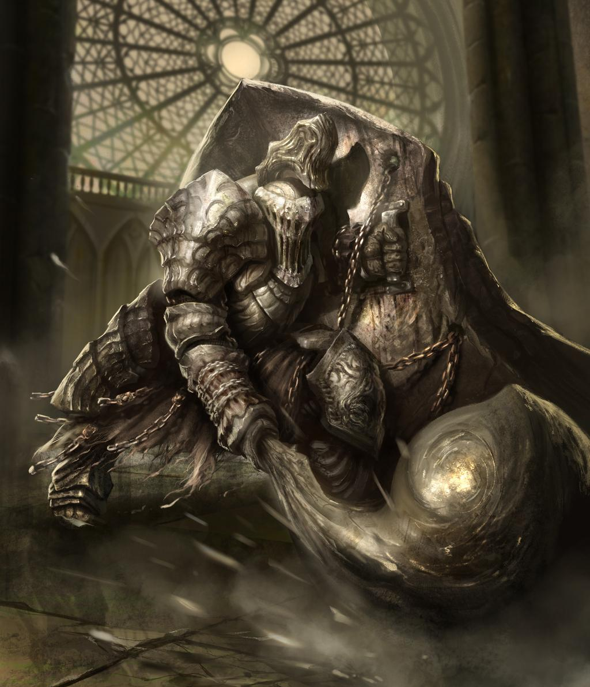
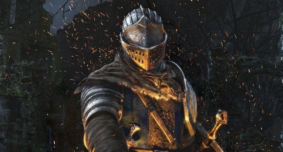
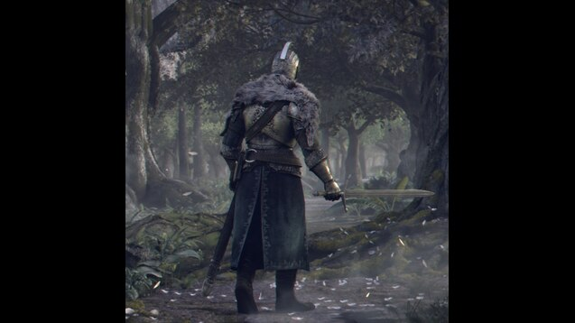
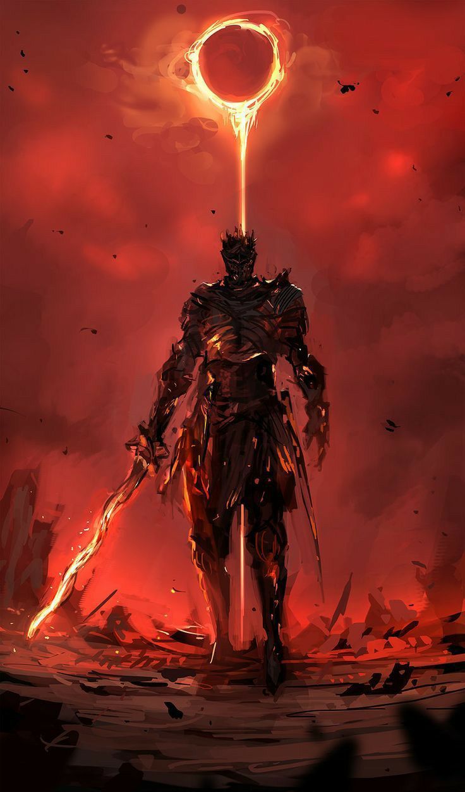

Dark Souls es una serie de juegos de rol de acción creada por Hidetaka Miyazaki de FromSoftware
y publicada por Bandai Namco Entertainment. La serie comenzó con el lanzamiento de Dark Souls en 2011
y ha visto dos secuelas, Dark Souls II en 2014 y Dark Souls III en 2016.
El caballero Solaire de Astora es un miembro del pacto Guerrero de la Luz Solar, con la misión de encontrar "su propio sol",
razón por la cual se convirtió en un no muerto. Solaire utiliza en combate la Espada recta de Luz Solar, el Escudo Luz Solar y usa el milagro Lanza relámpago.
click aqui para saber mas

Havel era amigo de Gwyn y uno de los soldados del ejército del Gran Señor. Era un hombre resistente y fuerte,
que animaba a sus hombres a lograr grandes cosas. Tanto él como sus hombres crearon armaduras talladas de piedra maciza
y llevaban anillos que les permitían transportar una carga más pesada.
click aqui para saber mas
El Rey Sin Nombre es un ser de gran estatura blindado con una armadura dorada adornada con escamas de dragón.
Lleva también una corona muy parecida a la del Primer Señor, mostrando así su estatus de rey
click aqui para saber mas

Después de convertirse en un no muerto, el personaje del jugador fue encarcelado en el Refugio de los no muertos norte.
Es rescatado por Oscar de Astora, quien deja caer una llave en la celda del jugador para que este pueda escapar.
Después de huir del Demonio del Refugio se encuentra con un Oscar fatalmente herido, que le dice al jugador de una profecía
que indica que un no muerto deberá participar en peregrinación al hacer sonar las Campanas del Despertar.
click aqui para saber mas
El Portador de la maldición se convirtió en un no muerto en algún momento, sufriendo los efectos de la maldición
hasta el punto de no tener ningún recuerdo de su vida anterior. Desesperado por encontrar una cura, se siente atraído por el reino de Drangleic
, donde se rumoreaba de la existencia de una cura para la maldición de los no muertos.
click aqui para saber mas
En algún momento, el Ser de la ceniza intentó enlazar el fuego. Sin embargo, no fue lo suficientemente poderoso para la tarea,
y las llamas lo redujeron a cenizas. Tiempo después, el Ser de la ceniza fue despertado por el tañido de la campana, indicando que el enlace del fuego estaba en peligro.
El Ser de la ceniza se dispuso a abandonar su tumba, encontrando más adelante la Espada en espiral alojada en el pecho de Iudex Gundyr. Al sacar la espada, Gundyr despertó
, pero el Ser de la ceniza lo derrota en combate y accede al Santuario de Enlace.
click aqui para saber mas
